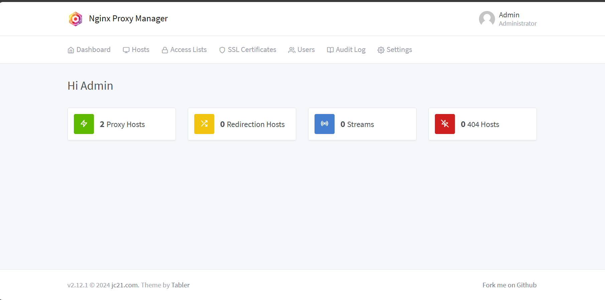
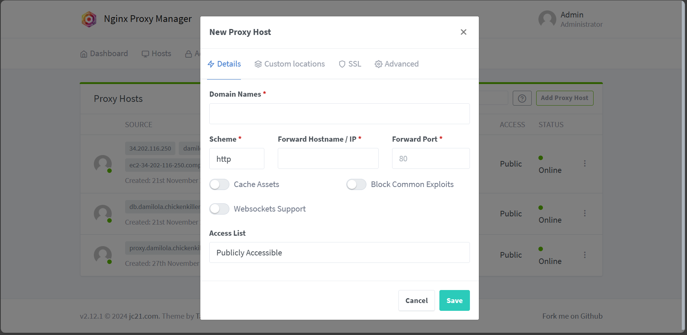
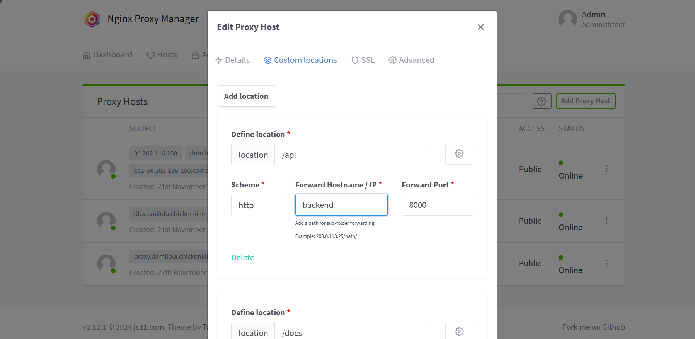
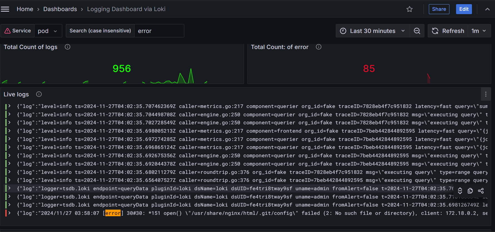

Deploying and Monitoring a Full-Stack App with Modern DevOps Tools.
2024-11-27
This year I decided to venture into the realm of practical DevOps adventures and I was lucky to stumble upon a set of DevOps challenges spanning 6 weeks, where each week we battle with some unique problem-solving scenarios involving various DevOps tools and technologies. This article is a documentation of my first challenge which is Deploying a containerized application and monitoring stack to the cloud, and configuring a reverse proxy.
The goal was to deploy a full-stack application with a React frontend, FastAPI backend and a PostgreSQL database in separate containers with docker-compose, putting all HTTP services behind a reverse proxy and managing configuration for the reverse proxy, collecting logs and container metrics and building a dashboard to visualize them.
To achieve this, I had to learn about:
- Deploying multi-container applications with docker-compose
- Setting up adminer for database management.
- Configuring a reverse proxy with Nginx Proxy Manager
- Collecting metrics with prometheus and cAdvisor
- Aggregating logs with Loki and Promtail
- Adding dashboards to Grafana.
- Deploying to a VM on the cloud with a custom domain.
Now let’s proceed.
Docker Containers
It might not be obvious, but to “dockerize” our application, we need to have docker running and use docker-compose to deploy multiple containers, one for each service. The services to be deployed include:
- Frontend service
- Backend service
- Postgres service
- Adminer service
- Nginx reverse proxy service
- Grafana service
- Prometheus service
- Loki service
- Promtail service
- cAdvisor service
All these services will be deployed on a single VM in the cloud, the services can be categorized into two stacks each with a docker-compose configuration file:
- An application stack: Frontend, Backend, Postgres, Adminer, Nginx proxy manager
- A monitoring stack: Grafana, Prometheus, Loki, Promtail and cAdvisor
We begin with the application stack, we first have to build docker images for our backend and frontend services and we do that by creating two Dockerfiles in our project’s root directory. The link to the project repo can be found here.
git clone https://github.com/The-DevOps-Dojo/cv-challenge01.git
cd cv-challenge01
touch Dockerfile.backend Dockerfile.frontend
# Dockerfile.backend
FROM python:3.10-slim
WORKDIR /opt/dojo
RUN apt-get update && apt-get install -y curl
RUN curl -sSL https://install.python-poetry.org | POETRY_HOME="/opt/poetry" POETRY_VERSION=1.8.3 python3 -
ENV PATH="/opt/poetry/bin:${PATH}"
COPY backend/pyproject.toml backend/poetry.lock .
RUN poetry install
ENV PYTHONPATH="/opt/dojo"
COPY backend/ .
RUN curl -o wait-for-it.sh https://raw.githubusercontent.com/vishnubob/wait-for-it/master/wait-for-it.sh
RUN chmod +x wait-for-it.sh
EXPOSE 8000
CMD ["sh", "-c", "./wait-for-it.sh -s postgres:5432 -- poetry run bash ./prestart.sh && poetry run uvicorn --host 0.0.0.0 --port 8000 app.main:app --reload"]
# Dockerfile.frontend
FROM node:18 AS build
WORKDIR /opt/app
COPY frontend/package.json frontend/package-lock.json ./
RUN npm install
COPY frontend/ .
ENV VITE_API_URL="http://<localhost or VM server hostname/ip>"
RUN npm run build
FROM nginx:stable-alpine AS production
COPY --from=build /opt/app/dist /usr/share/nginx/html
EXPOSE 80
CMD ["nginx", "-g", "daemon off;"]
Now that we have our Dockerfiles ready, we need to create our docker-compose configuration file for the application stack.
touch docker-compose.app.yml
and the content includes the following:
services:
frontend:
build:
context: .
dockerfile: Dockerfile.frontend
networks:
- app_network
postgres:
image: postgres:16
environment:
- POSTGRES_DB=challenge01
- POSTGRES_PASSWORD=Pssw0rd
volumes:
- postgres:/var/lib/postgresql/data
ports:
- "5432:5432"
networks:
- app_network
backend:
build:
context: .
dockerfile: Dockerfile.backend
networks:
- app_network
depends_on:
- postgres
adminer:
image: adminer
restart: always
networks:
- app_network
proxy-manager:
image: "jc21/nginx-proxy-manager:latest"
restart: unless-stopped
ports:
- "80:80"
- "443:443"
- "81:81"
volumes:
- ./data:/data
- ./letsencrypt:/etc/letsencrypt
networks:
- app_network
networks:
app_network:
driver: bridge
volumes:
postgres:
driver: local
Modify the backend/.env file to include our database credentials, we are hardcoding these in the docker-compose file for convenience, in a production environment, this is bad practice as secrets as this should not be exposed publicly.
POSTGRES_SERVER="postgres"
POSTGRES_PORT=5432
POSTGRES_DB=challenge01
POSTGRES_USER=postgres
POSTGRES_PASSWORD="Pssw0rd"
With the enviroment variables set, we can run our docker-compose command to build and run our code. But remember we created a docker-compose.app.yml file and we will be creating another config file for the monitoring stack but the docker-compose tool uses a docker-compose.yml file as default which can be overriden by passing the -f flag to the command. So we have the option to pass this file explicitly with the -f flag or we can set an appropriate variable to tell docker-compose where to find the config files. We would be taking the latter approach.
Create a .env file in the project’s root directory and set the contents to the following:
COMPOSE_FILE=docker-compose.app.yml
This tells docker-compose where to find the configuration files. With this setup, we can run our docker-compose command
docker-compose up -d --build
This would build and start the services we have defined so far, all our services should be up, but how do we access them?
Reverse Proxy Setup
A reverse proxy is a server that sits between client devices and backend servers, forwarding client requests to the appropriate server and then returning the server’s response back to the client. It acts as an intermediary, managing traffic and providing various benefits like security, scalability, and load balancing. In this challenge, we will be using Nginx and nginx proxy manager to manage traffic to our containers.
If you inspect our docker-compose.app.yml file, you would notice only our proxy-manager service has the host-container ports mapped, 80 for HTTP, 443 for HTTPS and 81 is an admin interface for nginx proxy manager, this is the only http service we are exposing to the internet, traffic would be routed internally through our reverse proxy.
Navigate to http://localhost:81 (or your server’s IP/DNS hostname on port 81) and you should see the admin login interface.

After logging in for the first time you are asked to input a new password and email, then you should be able to set proxy rules to route traffic from our proxy-manager container to other containers since they are in the same network according to our config file.

Click on “Proxy Hosts” to begin configuring proxy setting for your services.

To add a proxy host configuration, click on the “Add Proxy Host” button and it should bring up

Put your server domain name in the “Domain Names” input, and put the value proxy-manager as defined in our compose config as the Forward destination on port 80, so every request is forwarded to port 80, then navigate to the “Custom Locations” tab to set routing rules.

For each entry in the table below, click on “Add Location” to define the following routing rules.
| Location | Forward Hostname/IP | Port |
|---|---|---|
| / | frontend | 80 |
| /api | backend | 8000 |
| /docs | backend/api/v1/openapi.json | 8000 |
| /prometheus | prometheus | 9090 |
| /grafana | grafana | 3000 |
| /loki | loki | 3100 |
| /promtail | promtail | 9080 |
| /cadvisor | cadvisor | 8080 |
We would come back to the rest of the services, let us focus on the application stack, if everything goes well, you should be able to visit your server’s IP/hostname and see the frontend application, log in with the credentials in the backend/.env file and voila! you are a seasoned DevOps engineer.
Some routes may need further configuration especially with handling redirection, so you may need to add some custom Nginx configuration by clicking on the setting icon for the specific location and adding the following
location /<location> {
rewrite ^/<location>/(.*)$ /$1 break;
proxy_pass <container-name>:<container-port>/;
proxy_redirect / /<location>/;
}
Replace location with the appropriate location you are defining and the corresponding container-name and container-port. e.g
location /prometheus {
rewrite ^/prometheus/(.*)$ /$1 break;
proxy_pass http://cv-challenge01-prometheus-1:9090/;
proxy_redirect / /prometheus/;
}
This helps fix some common redirection issues, particularly for services like prometheus, and grafana.
Finally create another proxy host, this time for the adminer service, similar to how we routed all requests from our domain through our proxy-manager container, we would route a subdomain db.<domain> to the adminer container.
Monitoring and Logging
To setup our monitoring stack, we create a docker-compose.monitoring.yml file to define our services
touch docker-compose.monitoring.yml
services:
prometheus:
image: prom/prometheus:latest
restart: always
volumes:
- ./prometheus.yml:/etc/prometheus/prometheus.yml:ro
command:
- "--config.file=/etc/prometheus/prometheus.yml"
networks:
- app_network
grafana:
image: grafana/grafana:latest
restart: always
environment:
- "GF_INSTALL_PLUGINS=https://storage.googleapis.com/integration-artifacts/grafana-lokiexplore-app/grafana-lokiexplore-app-latest.zip;grafana-lokiexplore-app"
volumes:
- grafana-storage:/var/lib/grafana
- ./grafana.ini:/etc/grafana/grafana.ini:ro
networks:
- app_network
loki:
image: grafana/loki:latest
command: -config.file=/etc/loki/config.yml
volumes:
- ./loki-config.yml:/etc/loki/config.yml
networks:
- app_network
promtail:
image: grafana/promtail:latest
volumes:
- /var/log:/var/log
- /var/lib/docker/containers:/var/lib/docker/containers:ro # FOR WSL2 docker volume see more (https://github.com/vacp2p/wakurtosis/issues/58)
- ./promtail-config.yml:/etc/promtail/config.yml
command: "-config.file=/etc/promtail/config.yml"
networks:
- app_network
cadvisor:
image: gcr.io/cadvisor/cadvisor:latest
volumes:
- /:/rootfs:ro
- /var/run:/var/run:rw
- /sys:/sys:ro
- /var/lib/docker/:/var/lib/docker:ro
- /dev/disk:/dev/disk:ro
networks:
- app_network
volumes:
grafana-storage:
driver: local
We also need to setup configuration files for prometheus, grafana, loki and promtail. So create the following files
touch prometheus.yml grafana.ini loki-config.yml promtail-config.yml
# prometheus.yml
global:
scrape_interval: 15s
evaluation_interval: 15s
scrape_configs:
- job_name: "prometheus"
static_configs:
- targets:
- "localhost:9090"
- job_name: "loki"
static_configs:
- targets:
- "loki:3100"
- job_name: "promtail"
static_configs:
- targets:
- "promtail:9080"
- job_name: cadvisor
scrape_interval: 5s
static_configs:
- targets:
- "cadvisor:8080"
# grafana.ini
[server]
# URL to serve Grafana from, it is important that this matches the URL used by the client.
root_url = %(protocol)s://%(domain)s:%(http_port)s/grafana/
# loki-config.yml
auth_enabled: false
server:
http_listen_port: 3100
grpc_listen_port: 9096
common:
instance_addr: 127.0.0.1
path_prefix: /tmp/loki
storage:
filesystem:
chunks_directory: /tmp/loki/chunks
rules_directory: /tmp/loki/rules
replication_factor: 1
ring:
kvstore:
store: inmemory
query_range:
results_cache:
cache:
embedded_cache:
enabled: true
max_size_mb: 100
schema_config:
configs:
- from: 2020-10-24
store: tsdb
object_store: filesystem
schema: v13
index:
prefix: index_
period: 24h
ruler:
alertmanager_url: http://localhost:9093
# By default, Loki will send anonymous, but uniquely-identifiable usage and configuration
# analytics to Grafana Labs. These statistics are sent to https://stats.grafana.org/
#
# Statistics help us better understand how Loki is used, and they show us performance
# levels for most users. This helps us prioritize features and documentation.
# For more information on what's sent, look at
# https://github.com/grafana/loki/blob/main/pkg/analytics/stats.go
# Refer to the buildReport method to see what goes into a report.
#
# If you would like to disable reporting, uncomment the following lines:
#analytics:
# reporting_enabled: false
pattern_ingester:
enabled: true
limits_config:
allow_structured_metadata: true
volume_enabled: true
# promtail-config.yml
server:
http_listen_port: 9080
grpc_listen_port: 0
positions:
filename: /tmp/positions.yaml
clients:
- url: http://loki:3100/loki/api/v1/push
scrape_configs:
- job_name: system
static_configs:
- targets:
- localhost
labels:
job: varlogs
__path__: /var/log/*log
- job_name: containers
static_configs:
- targets:
- localhost
labels:
job: "containerlogs"
__path__: /var/lib/docker/containers/*/*.log
Edit the .env file in the root folder like so:
COMPOSE_FILE=docker-compose.app.yml:docker-compose.monitoring.yml
Now we are telling docker-compose to use these two config files to run our containers. We can now run our containers with the command
docker-compose up -d
These should start all our services. If all goes well, you should be able to access the routes defined earlier in the reverse proxy. If any issues confirm the services are up or play around with the proxy manager custom location settings
Navigate to the /grafana route and login with the credentials admin for both username and password, you will be prompted to change this after logging in.
Open the menu and navigate to “Connections” and select “Data Sources”, add loki and prometheus as data sources, once configured with the appropriate URLs, we can proceed to create a dashboard.
To save time, we can import community made dashboards like this one or you can create your own dashboards

The dashboard above uses metrics from prometheus exported by cAdvisor to give insights on container resource usage. Similarly you can set up dashboards with your Loki source to stream and visualize log data.

That’s about it for our monitoring stack, right now we have been able to setup our application and monitoring stacks, but we need to deploy this to a VM so it is publicly available.
Cloud Deployment
To make our application available to the public, we need a domain name, you can get a free subdomain with Afraid DNS, we also need our target VM with a public IP address, we can setup an EC2 server on AWS with docker installed, you can put the script to install docker and add your user to a group in the User Data section before launching the instance, so it runs while the server is being provisioned. Also ensure the following ports are open in the security groups or firewall. Ports 22, 80, 81, 443
Once that is out of the way and we have our IP address, we should point our domain name to this IP address, then we can go ahead to copy our development files over to our VM using scp. In our project’s root folder, copy everything to our VM like so
scp -ri "key.pem" . user@hostname:/home/ubuntu
Ensure our docker-compose files were copied over and .env file, then run the docker-compose up command
docker-compose up -d --build
Make sure to set the reverse proxy configuration if you did it on localhost initially, then add SSL to your domain by either getting a free certificate from Let’s Encrypt right there in the Nginx Proxy Manager admin interface or add a custom one. Once SSL is set up and routing is working fine, we are done!. 🎊🎊🎊
To avoid CORS errors when accessing the frontend, update the backend/.env to include your domain name in the BACKEND_CORS_ORIGINS variable.
Wrapping Up
We have been able to deploy a fullstack application and monitoring tools for our deployment with the help of docker-compose. docker-compose is a simple tool and I am aware that when running production grade apps, there are other preferred industry-standard alternatives like kubernetes, but we have been able to get a taste of what is required to take an app from code to deployment. You can find my repo with full solution here
We have learned to use tools like grafana, loki, promtail, prometheus and cadvisor to make our systems observable which is standard industry practice, also learned about reverse proxys and how to manage proxy configurations with a simple tool like nginx proxy manager.
By combining these tools, we’ve built a solid infrastructure that ensures real-time monitoring of our application’s health and performance. This framework enables us to promptly detect and address issues, establishing a reliable base for maintaining and scaling the workloads effectively.